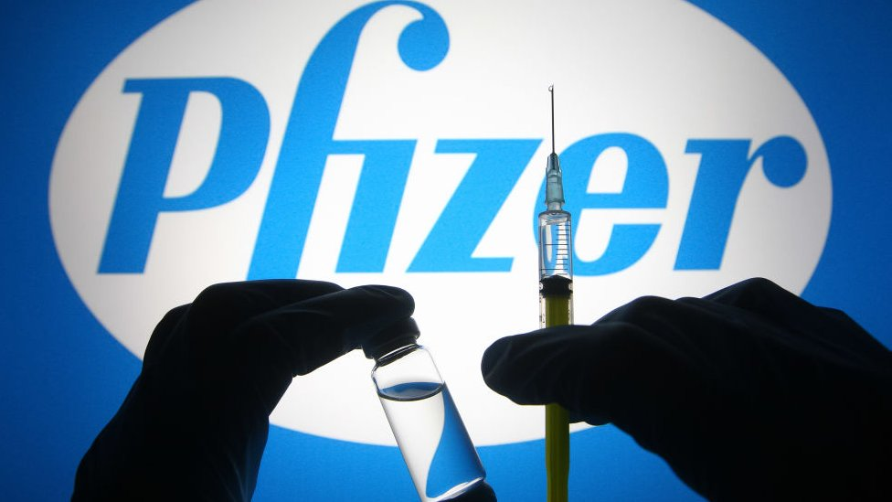
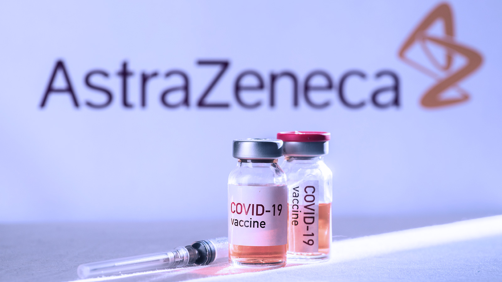
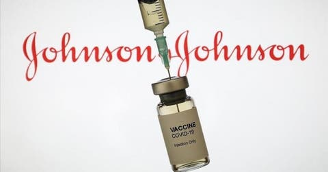
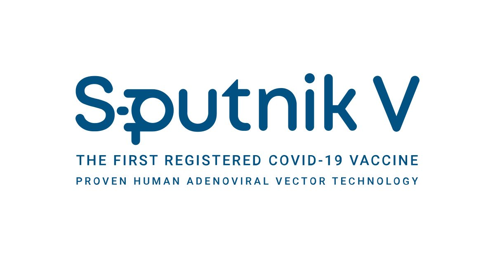
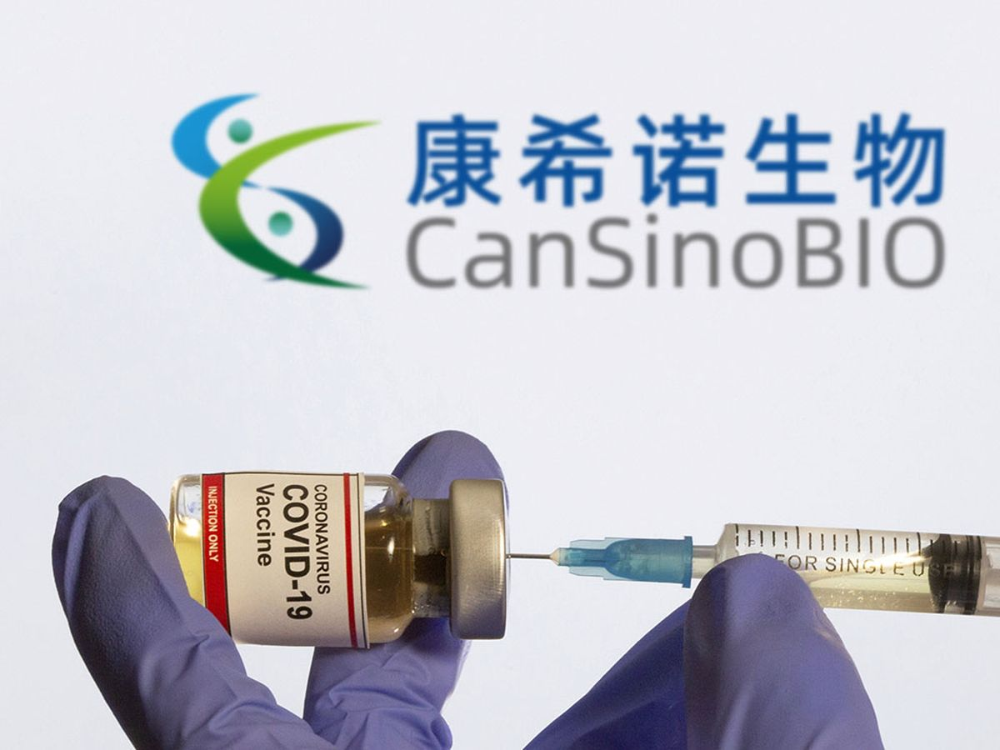
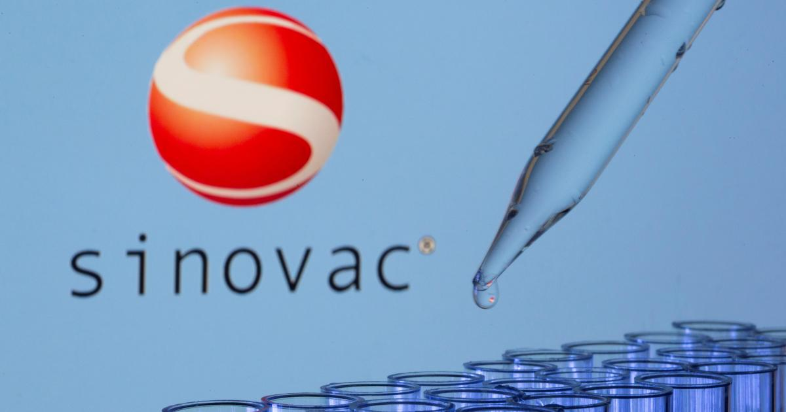
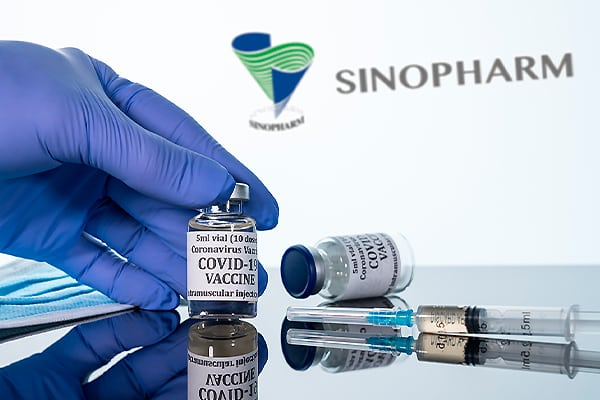
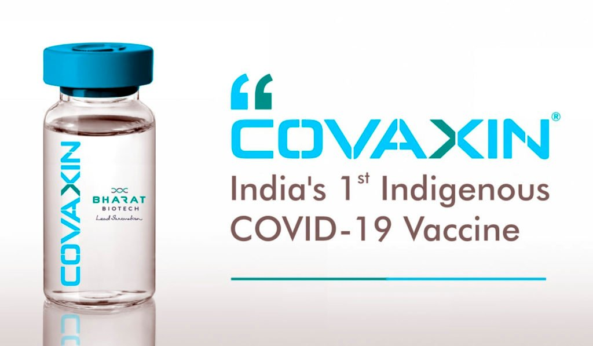

Sobre las Vacunas contra COVID-19
Existen diferentes tipos de vacunas, están diseñadas para preparar a nuestro sistema inmunológico a combatir enfermedades. Se están desarrollando diversos tipos de posibles vacunas contra la COVID-19, entre ellas:
Vacunas con virus inactivados o atenuados: Utilizan un virus previamente inactivado o atenuado, de modo que no provoca la enfermedad, pero aún así genera una respuesta inmunitaria.
Vacunas basadas en proteínas: Utilizan fragmentos inocuos de proteínas o estructuras proteicas que imitan el virus causante de la COVID-19, con el fin de generar una respuesta inmunitaria.
Vacunas con vectores virales: Utilizan un virus genéticamente modificado que no puede provocar la enfermedad, pero sí puede producir proteínas de coronavirus para generar una respuesta inmunitaria segura.
Vacunas con ARN y ADN: Un enfoque pionero que utiliza ARN o ADN genéticamente modificados para generar una proteína que por sí sola desencadena una respuesta inmunitaria.
Vacuna Pfizer
La vacuna de ARN mensajero contra la COVID-19 de Pfizer-BioNTech es segura y eficaz. Se ha comprobado que la vacuna es segura y eficaz en personas con diversas afecciones asociadas a un mayor riesgo de enfermedad grave. Estas afecciones incluyen: la hipertensión; la diabetes; el asma; las enfermedades pulmonares, hepáticas y renales; y las infecciones crónicas estables y controladas.
Fabricante: Pfizer, Inc., y BioNTech.
Dosis: Aunque el efecto protector empieza a aparecer a los 12 días de administrar la primera dosis, para obtener la protección completa se necesitan dos dosis, que la OMS recomienda administrar con una separación de 21 a 28 días.
Eficacia: La vacuna de Pfizer BioNTech contra la COVID-19 tiene una eficacia del 95% contra la infección sintomática por SARS-CoV-2.
Efectos Secundarios: La mayoría de las reacciones se detectaron entre mujeres (74%) y personas de entre 18 y 65 años (88%). Asimismo, 9.430 fueron consideradas graves, mientras que las más comunes continúan siendo “trastornos generales(fiebre y malestar), del sistema nervioso(cefalea y mareos)y del sistema musculoesquelético (mialgia y artralgia). Por su parte, la AEMPS ha confirmado algunos efectos secundarios nuevos en las vacunas desarrolladas por Pfizer/BioNTech.
¿Quiénes deben vacunarse? Pfizer-BioNTech (COMIRNATY) recibió la aprobación de la Administración de Alimentos y Medicamentos de EE. UU. el 23 de agosto del 2021, para usar en personas de 16 años de edad o más.
¿Quién NO debe vacunarse? Si ha tenido una reacción alérgica grave (anafilaxia) o una reacción alérgica inmediata, aunque no haya sido grave, a cualquier ingrediente de la vacuna contra el COVID-19 de Pfizer-BioNTech (como el polietilenglicol), no debería recibir esta vacuna.
Vacuna AstraZeneca
La OMS ha incluido dos versiones de la vacuna, producidas por AstraZeneca-SKBio (República de Corea) y el Serum Institute of India, para uso de emergencia. Cuando la vacuna se sometió a la consideración del SAGE, había sido revisada por la Agencia Europea de Medicamentos (EMA). La EMA ha evaluado exhaustivamente los datos sobre la calidad, seguridad y eficacia de la vacuna y ha recomendado que se conceda una autorización de comercialización condicional para las personas de 18 años y más.
Fabricante: AstraZeneca, Universidad de Oxford.
Dosis: La dosificación recomendada es la siguiente: dos dosis administradas por vía intramuscular (0,5 ml cada una) separadas por un intervalo de entre 8 y 12 semanas. Es necesario realizar más investigaciones para comprender la posible protección a más largo plazo tras una sola dosis.
Eficacia: La vacuna AZD1222 contra la COVID-19 tiene una eficacia del 63,09% contra la infección sintomática por SARS-CoV-2. Los intervalos más amplios entre dosis dentro del rango de 8 a 12 semanas están asociados a una mayor eficacia de la vacuna.
Efectos Secundarios: Los eventos más frecuentes asociados a esta vacuna encontrados fueron dolor en el sitio de inyección, fatiga, dolor de cabeza, mialgia (dolor muscular), artralgia (dolor en las articulaciones) y fiebre, los cuales fueron de intensidad leve a moderada y se resolvieron dentro de las 48 horas posteriores a la vacunación.
¿Quiénes deben vacunarse? Se recomienda vacunar a las personas con comorbilidades que se ha constatado que aumentan el riesgo de sufrir una forma grave de COVID-19, en particular obesidad, enfermedades cardiovasculares, enfermedades respiratorias y diabetes.
¿Quién NO debe vacunarse? No se recomienda la vacuna para menores de 18 años, a reserva de los resultados de nuevos estudios.
Vacuna Johnson & Johnson
La Agencia Europea de Medicamentos (EMA) ha evaluado exhaustivamente los datos sobre la calidad, la seguridad y la eficacia de esta vacuna y ha recomendado Su administración a las personas de 18 años o más. Tato la EMA como la Administración de Alimentos y Medicamentos de los Estados Unidos (FDA) han estudiado la vacuna y han concluido que su uso es seguro.
Fabricante: Janssen Pharmaceuticals Companies of Johnson & Johnson.
Dosis: El SAGE recomienda administrar la vacuna Ad26.CoV2.S de Janssen en una dosis (0,5 ml) por vía intramuscular. Debe respetarse un intervalo mínimo de 14 días entre la administración de esta vacuna y la de cualquier otra vacuna contra otras enfermedades.
Eficacia: Se ha comprobado que la vacuna Ad26.CoV2.S de Janssen tiene una eficacia del 85,4% como prevención de la enfermedad grave por COVID-19 y del 93,1 de la hospitalización, a los 28 días de su administración.
Efectos Secundarios: En el brazo donde recibió la vacuna inyectable: Dolor, enrojecimiento e hinchazón. En el resto del cuerpo: Cansancio, dolor de cabeza, dolor muscular, escalofríos, fiebre y náuseas.
¿Quiénes deben vacunarse? La vacuna es segura y eficaz en las personas con afecciones conocidas asociadas a un mayor riesgo de presentar una forma grave de la enfermedad, como hipertensión, EPOC, cardiopatías graves, obesidad y diabetes. Las personas infectadas por el virus de la inmunodeficiencia humana (VIH) corren más riesgo de presentar síntomas graves de la COVID-19.
¿Quién NO debe vacunarse? No se debe administrar esta vacuna a las personas que hayan sufrido anafilaxia por exposición a cualquiera de sus componentes. Toda persona con una temperatura corporal superior a 38,5ºC debe posponer la vacunación hasta que se le haya pasado la fiebre. No se recomienda administrar la vacuna a los menores de 18 años, a reserva de los resultados de nuevos estudios.
Vacuna Sputnik V
La vacuna consta de dos componentes, que incluyen como vector un adenovirus recombinante no replicativo basado en los serotipos 26 y 5 de adenovirus humano, respectivamente, que portan el gen de la proteína S (“Spike") del SARS-CoV-2. De esta forma, la vacuna faculta a las células de las personas vacunadas, para la producción de proteína S, en ausencia del virus SARS-CoV-2, activando así al sistema inmune de las personas vacunadas, para producir anticuerpos neutralizantes específicos contra este virus, que al unirse a la proteína S viral, impiden que el virus se acople a los receptores ACE2 de las células de las personas vacunadas, dificultando su entrada a las células.
Fabricante: Centro de Investigación Gamaleya
Dosis: La vacuna rusa Sputnik V utiliza dos dosis, pero, a diferencia de la mayoría, son de componentes diferentes, despues de ser aplicada la primera dosis de la vacuna Sputnik V debe esperar desde los 21 días hasta los 90 días posteriores para aplicar la segunda dosis
Eficacia: La vacuna contra la COVID-19 desarrollada por el Instituto Gamaleya de Moscú (Rusia), Sputnik, ha demostrado una eficacia del 97,2% durante la campaña de vacunación desarrollada en Bielorrusia, según los datos ofrecidos por el Fondo de Inversiones Directas de Rusia (RDIF), administrado por el Gobierno.
Efectos Secundarios: Un análisis temporal de la fase 3 de los datos de ensayos clínicos, publicado en The Lancet en febrero de 2021, informa sobre la eficacia y seguridad de la vacuna. Con base en los datos, los efectos secundarios más comunes fueron:
- Enfermedad parecida a la gripe
- Dolor de cabeza
- Fatgia
- Reacciones en el sitio de la inyección
¿Quiénes deben vacunarse? La vacuna es segura y eficaz en las personas con afecciones conocidas asociadas a un mayor riesgo de presentar una forma grave de la enfermedad, como hipertensión, EPOC, cardiopatías graves, obesidad y diabetes. Las personas infectadas por el virus de la inmunodeficiencia humana (VIH) corren más riesgo de presentar síntomas graves de la COVID-19.
¿Quién NO debe vacunarse? De acuerdo con información del Gobierno de México, la vacuna está contraindicada para:
- Personas con hipersensibilidad a algún componente de la vacuna.
- Pacientes con antecedentes de alergia grave, como reacción anafiláctica.
- Personas con enfermedades agudas graves (ya sea infecciosas o no infecciosas).
- Quienes hayan tenido COVID-19 en días recientes y todavía no se recuperen al 100 por ciento.
Vacuna Moderna

Fabricante: ModernaTX, Inc., Noubar Afeyan, Robert S. Langer, Kenneth R. Chien, Derrick Rossi.
Dosis: 2 dosis con 28 días de diferencia. Algunas personas inmunodeprimidas deben recibir 3 dosis. Se recomienda que algunos grupos de personas reciban la dosis de refuerzo al menos 6 meses después de recibir la segunda dosis.
Eficacia: La vacuna demostró tener una eficacia del 94.1% en la prevención de casos de COVID-19 confirmados en laboratorio
Efectos Secundarios:
En el brazo donde recibio la vacuna inyectable:
- Dolor
- Enrojecimiento
- Hinchazon
En el resto del cuerpo:
- Cansancio
- Dolor de cabeza
- Dolor muscular
- Escalofríos
- Fiebre
- Náuseas
¿Quiénes deben vacunarse? La vacuna de Moderna se recomienda para personas de 18 años de edad o más.
¿Quién NO debe vacunarse?
- Si tuvo una reacción alérgica grave (anafilaxia) o una reacción alérgica inmediata, incluso si no fue grave, a alguno de los ingredientes de la vacuna de ARNm contra el COVID-19 (como el polietilenglicol), no debe recibir una vacuna de ARNm contra el COVID-19.
- Si tuvo una reacción alérgica grave o inmediata después de recibir la primera dosis de la vacuna de ARNm contra el COVID-19, no debe recibir la segunda dosis de ninguna de las vacunas de ARNm contra el COVID-19 (Moderna o Pfizer-BioNTech).
- Una reacción alérgica grave es la que requiere tratamiento con epinefrina o EpiPen, o atención médica. Conozca los efectos secundarios más comunes de las vacunas contra el COVID-19 y cuándo debe llamar a su médico.
- Una reacción alérgica inmediata se manifiesta hasta 4 horas después de haberse vacunado, e incluye síntomas como urticaria, hinchazón o sibilancia (insuficiencia respiratoria).
Vacuna CanSino
Nombre en clave AD5-nCOV, es una vacuna de una sola dosis contra la COVID-19 desarrollada por la empresa china de vacunas CanSino Biologics.
Fabricante: CanSino Biologics Inc.
Dosis: Para alcanzar su correcta efectividad, la Ad5-nCoV debe ser administrada en una sola dosis.
Eficacia: Su efectividad para evitar casos sintomáticos de esta enfermedad fue de un 65%.
Efectos Secundarios: Dolor, enrojecimiento o endurecimiento en el brazo de aplicación, comezón en el sitio de la aplicación, sangrado en el sitio de la inyección (con menor frecuencia), fiebre, dolor muscular, fatiga.
¿Quiénes deben vacunarse? Personas de 18 años y más.
¿Quién NO debe vacunarse? A está contraindicada en personas con antecedentes de reacción alérgica grave, tipo anafilaxia y alergia. La vacuna está contraindicada en personas que recientemente hayan presentado COVID-19 y aún no se recuperen y personas en estado de embarazo y menores de 18 años.
Vacuna CoronaVac
A veces llamada CoronaVac es una vacuna contra la COVID-19 desarrollada por la compañía farmacéutica china Sinovac Biotech.
Fabricante: Fabrica la empresa farmacéutica Sinovac, cuya sede se encuentra en Beijing (China).
Dosis: El SAGE recomienda administrar dos dosis de 0,5 ml de esta vacuna por vía intramuscular, separadas por un intervalo de 2 a 4 semanas
Eficacia: Ha demostrado tener una efectividad del 51 % contra la infección sintomática.
Efectos Secundarios: Dolor en la zona de la inyección, Dolor de cabeza, Cansancio, Dolor muscular.
¿Quiénes deben vacunarse? Se recomienda vacunar a las personas que presenten enfermedades que, de acuerdo con los datos disponibles, aumentan el riesgo de sufrir síntomas graves de la COVID-19.
¿Quién NO debe vacunarse? No se recomienda administrar esta vacuna a menores de 18 años hasta que haya estudios que proporcionen resultados relativos a este grupo de edad.
Vacuna Sinopharm BBIBP
La vacuna BBIBP-CorV desarrollada por el grupo Sinopharm, fue creada a partir de virus inactivados (celulas Vero), lo cual le confiere una ventaja en cuanto a su facilidad de almacenamiento, ya que puede conservarse hasta por 24 meses a una temperatura entre 2 y 8 C.
Fabricante: Instituto de Productos Biológicos de Pekín, Sinopharm
Dosis: El SAGE recomienda administrar dos dosis de 0,5 ml de esta vacuna por vía intramuscular, separadas por un intervalo de 3 a 4 semanas. No es necesario repetir la administración de la segunda dosis si esta se aplica accidentalmente antes de que hayan transcurrido tres semanas desde la primera. En el caso de que hayan pasado más de 4 semanas después de la primera dosis, la segunda se ha de administrar lo antes posible. Se deben administrar ambas dosis a todas las personas vacunadas.
Eficacia: En un gran ensayo internacional de fase III se ha demostrado que la administración de dos dosis de esta vacuna con un intervalo de 21 días protege con una eficacia del 79% contra la infección sintomática por el SRAS-CoV-2 al cabo de 14 o más días después de la fecha de administración de la segunda dosis.
Efectos Secundarios:
- Dolor e hinchazon en el sitio de la inyección
- Fatgia
- Fiebre
- Diarrea
- Tos
- Náuseas
¿Quiénes deben vacunarse? Personas de 18 años y más
¿Quién NO debe vacunarse? Las personas que hayan presentado una reacción alérgica fuerte a algún componente de esta vacuna no deberían vacunarse.Además, se debe posponer la vacunación de toda persona cuya temperatura corporal supere los 38,5 °C, hasta que no tenga fiebre. No se recomienda administrar esta vacuna a menores de 18 años, a reserva de haya estudios que proporcionen resultados relativos a este grupo de edad.
Vacuna Covaxin
La vacuna BBV152 o COVAXIN desarrollada por el laboratorio Bharat Biotech International Limited con sede en la India tiene el objetivo de prevenir COVID19 en personas de dieciocho anos y mas. Es una de las vacunas elaboradas a partir de virus inactivados del SARS-COV-2 y que ha sido aprobada para su aplicacion en Mexico.
Fabricante: Bharat Biotech
Dosis: El esquema de vacunación consiste de 2 dosis con 28 días de intervalo entre cada una.
Eficacia: COVAXIN demostro una eficacia de la vacuna del 77,8% contra la enfermedad sintomatica COVID-19, del 93,4% contra la enfermedad COVID-19 sintomatica grave y una proteccion del 63,6% contra COVID-19 asintomatico. Los datos de eficacia demuestran una proteccion del 65,2% contra el SARS-CoV-2, variante B.1.617.2 Delta. Sin embargo, la vacunacion no garantiza evitar la transmision y/o contagio del nuevo coronavirus.
Efectos Secundarios:
Efectos adversos locales: 3% dolor e hinchazon en el sitio de inyeccion.
Efectos adversos sistemicos: 3% fiebre,1% dolor de cabeza, 1% dolor de cuerpo y fatiga.
¿Quiénes deben vacunarse? Personas de 18 años y más
¿Quién NO debe vacunarse?
- Fiebre mayor a 38ºC
- Trastornos hemorrágicos.
- Si han pasado menos de 14 días de haber recibido alguna otra vacuna (por ejemplo, contra la influenza).
- Si tuviste COVID-19, tu médico debe darte de alta antes de que te apliques cualquiera de estas vacunas.
| Integrante | Opción de vacuna |
|---|---|
| Andrea Sofía Puebla Escobar | Moderna |
| Juan Antonio Mariscal Vázquez | Pfizer |
| Diego Sebastian Palacios Muños | Astrazeneca |
| Asenet Abigail Lazcano Sauceda | Moderna |
| Devannie Janett Saucedo Orozco | Pfizer |
| Miguel Argenis Vargas Cepeda | Moderna |
| Mario Jahir Regino Garcia | Johnson & johnson |